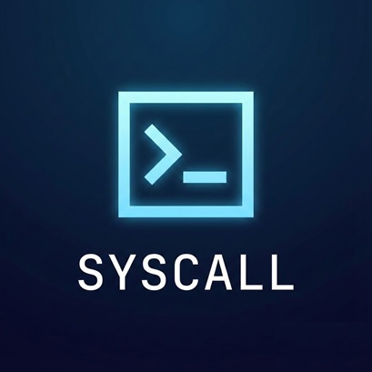

SYSCALL SDK[ BLOCKCHAIN TO REAL_WORLD BRIDGE ]
The first high-performance I/O layer designed for the real-time economy. Empower your smart contracts with "hands" to interact with the physical world via Emails, SMS, and AI, powered by MegaETH.
Smart contracts are inherently sandboxed; they cannot communicate with the outside world without brittle, centralized intermediaries. Syscall SDK solves the "Action Gap." While traditional Oracles bring data in, Syscall enables trustless outbound actions.
Our infrastructure removes the need for maintaining private servers, managing complex API keys, or building custom "watchers." Whether you are a solo user, a frontend developer, or a backend engineer, Syscall provides a unified interface to trigger physical world events directly from on-chain logic.
We believe Web3 infrastructure should be as permissionless as the blockchain itself. Syscall offers a "Pay-as-you-go" model with absolute freedom:
100% On-chain. Pay per use with your wallet. Simple, fast, and commitment-free.
You don't need to be a developer to leverage Syscall. Our intuitive web interfaces allow you to send cryptographically verified emails or instant SMS alerts directly from your wallet. Perfect for secure communication, verified notifications, or simple on-chain to off-chain alerts.
Build dApps that truly communicate. Our lightweight SDK allows you to integrate complex Web2 functionalities
directly into your UI. A single line of code, new Syscall(window.ethereum), turns your interface
into a communication powerhouse without the need for a dedicated backend.
Secure your automation pipelines with trustless relayers. Trigger emails, SMS, or AI tasks from your Node.js scripts or bots without managing brittle, centralized API keys. Syscall is the purely programmatic, purely decentralized I/O solution for the next generation of autonomous agents.
SYSCALL AI
Trustless LLM & Inference Engine
Standard Oracles bring data onto the blockchain. Syscall is a "Reverse Oracle"—it listens for on-chain events and triggers real-world actions like emails or API calls securely.
Absolutely. Your security is enforced by the blockchain. You only pay when you sign a transaction with your wallet, ensuring you have total control over every action.
MegaETH offers sub-second block times. This allows Syscall to deliver emails and SMS almost instantly, matching the speed of traditional Web2 services while maintaining Web3 decentralization.
Yes. Syscall is perfect for DAOs that need to notify members of governance votes, treasury movements, or emergency actions directly via off-chain channels.